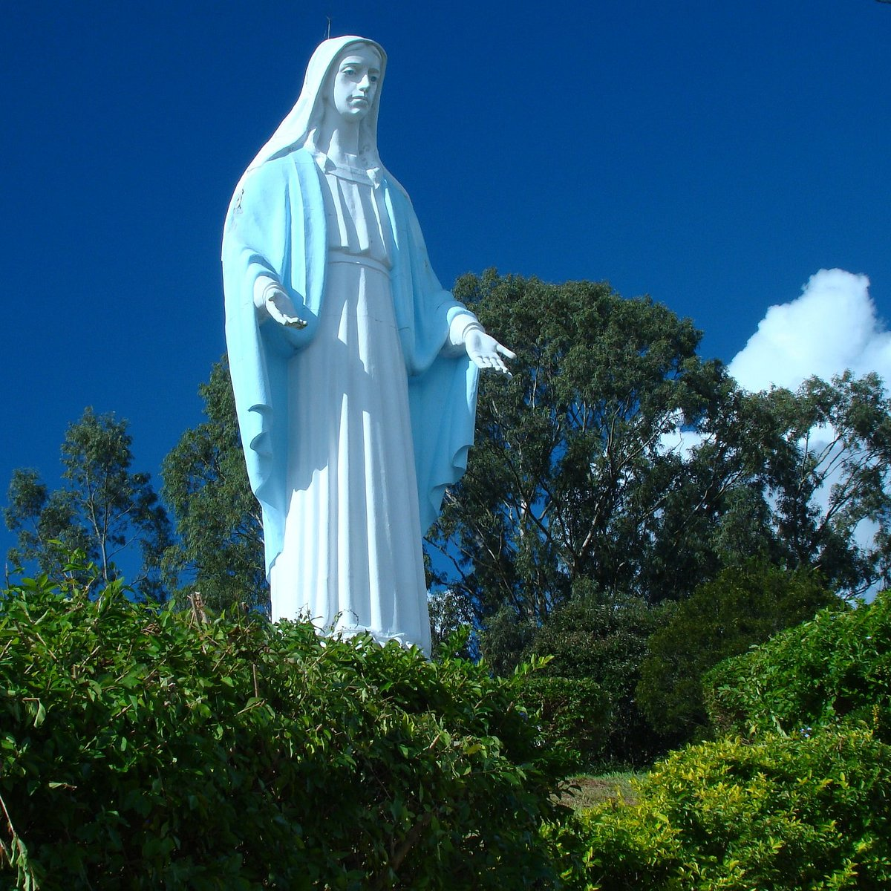
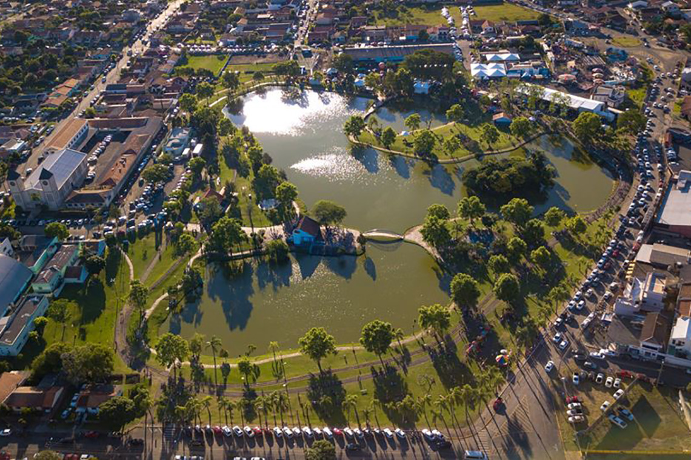
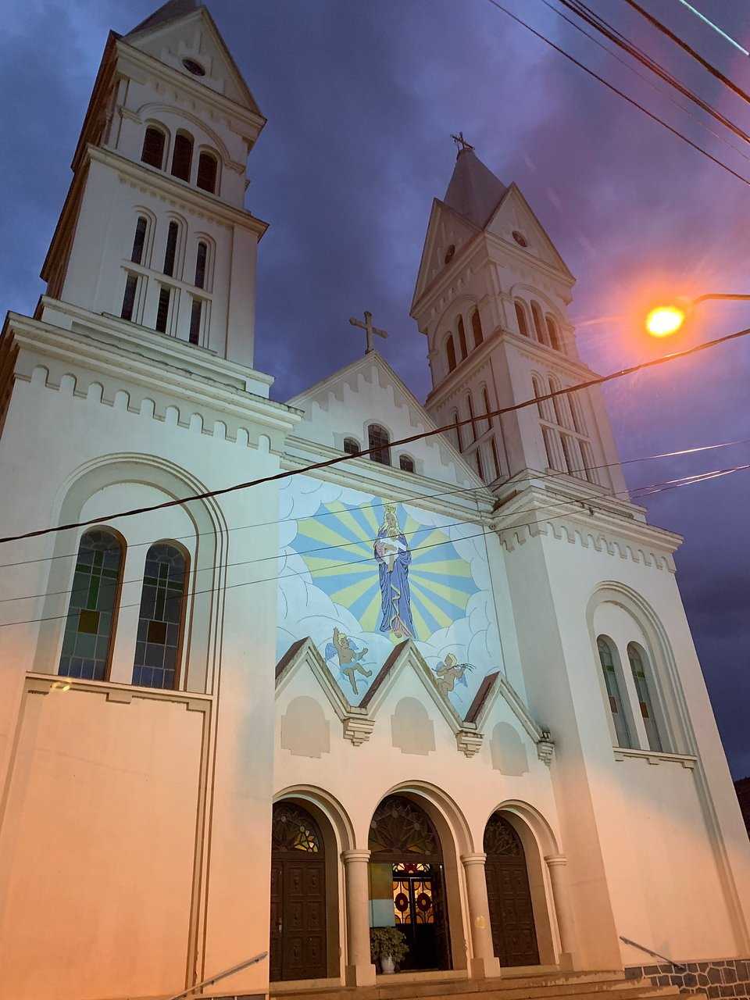
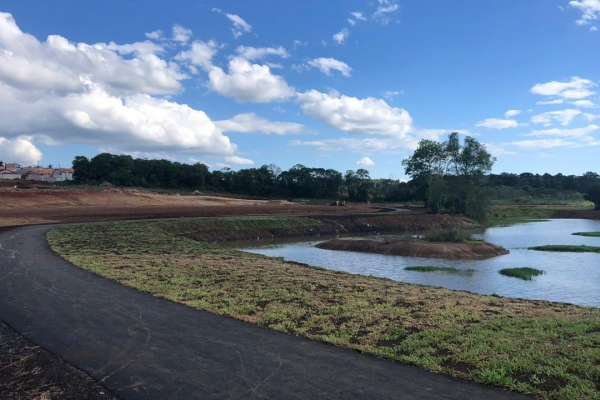

| Morro da Santa | Parque Aquático | Praça da Matriz | Parque da Vila |
|---|---|---|---|
| O Morro da Santa é um dos lugares mais altos da cidade, onde se encontra uma grande estátua de Nossa Senhora das Graças. A estátua tem altura de 22 metros, sendo considerada uma das maiores do mundo, teve sua construção em 1957 em comemoração aos 50 anos da cidade. | Parque localizado no bairro Rio Bonito, com um grande lago no seu interior e um lindo cenário para se ter uma caminhada de fim de tarde. O parque apresenta uma pista de 800 metros de circunferência, além de ter em seu entorno alguns lugares para alongamento, parquinhos para crianças, quadras e campos de esporte, entre outras coisas que deixam o lugar ainda mais bonito. | Localizado no centro, uma praça cheia de árvores com uma enorme igreja em sua frente. A praça possui uma quadra de basquete e um parquinho para crianças, com uma paisagem linda, e acima de tudo, o parque se encontra em uma subida, e logo ao topo, pode-se ver a igreja Nossa Senhora da Luz. | Parque localizado na Vila São João, com uma enorme pista de caminhada, além de várias quadras e campos para práticas de diferentes esportes. O parque tem uma grande área plana com vários campos, além de várias mesas para se acomodar. |
| 
Imagem do Morro da Santa |

Imagem do Parque Aquático |

Imagem da Matriz |

Imagem do Parque da Vila |
@todos os direitos reservados